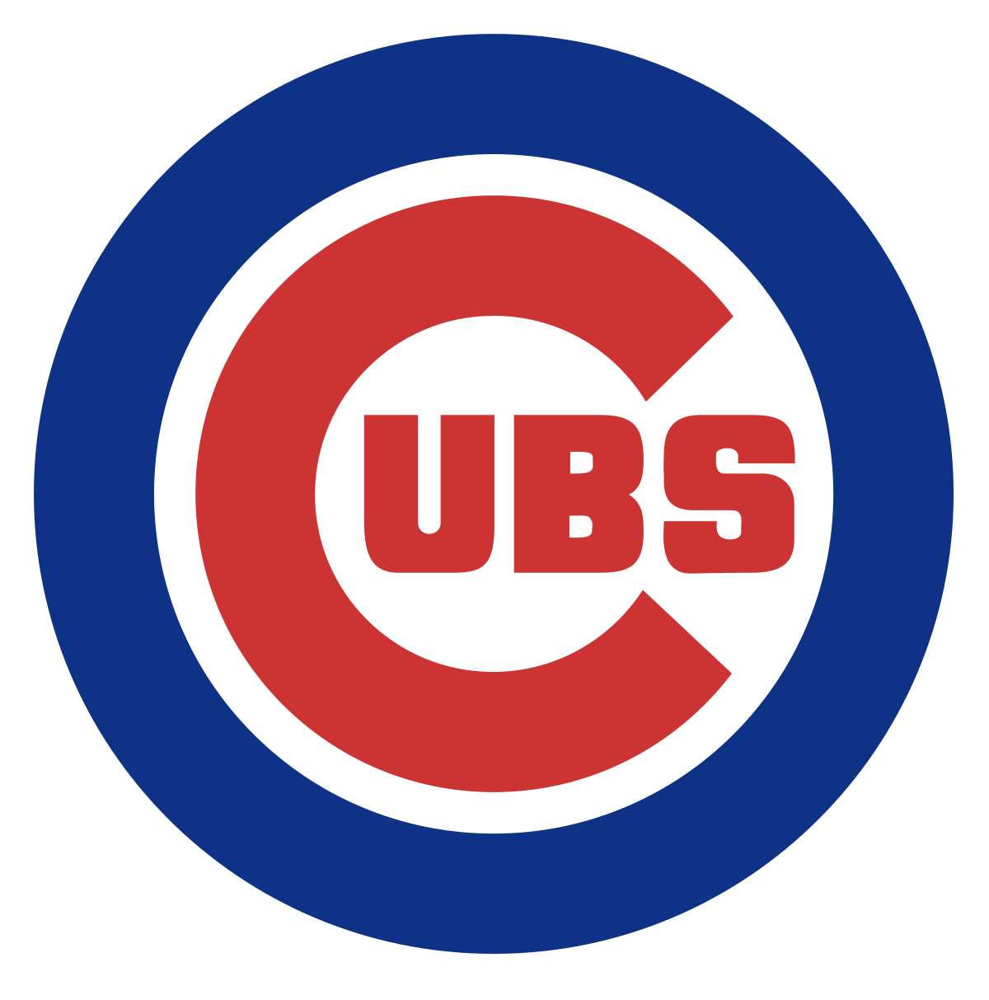

The Cubs
One of the Greatest Teams in the Midwest
The Chicago Cubs are one of the most iconic teams in Major League Baseball, with a storied history that stretches back over a century. Known for their loyal and long-suffering fanbase, the Cubs became synonymous with the 'Curse of the Billy Goat' for 108 years, enduring decades of near-misses and heartbreak. However, in 2016, they finally broke the curse, winning their first World Series title in over a century, an unforgettable moment that solidified their place in baseball history. The Cubs’ historic home, Wrigley Field, is a landmark in Chicago, where generations of fans have come together to celebrate their love for the game. With legends like Ernie Banks, Ryne Sandberg, and Kris Bryant, the Cubs represent the heart of Chicago, filled with passion, resilience, and a dedication to the game that transcends victories and losses.
